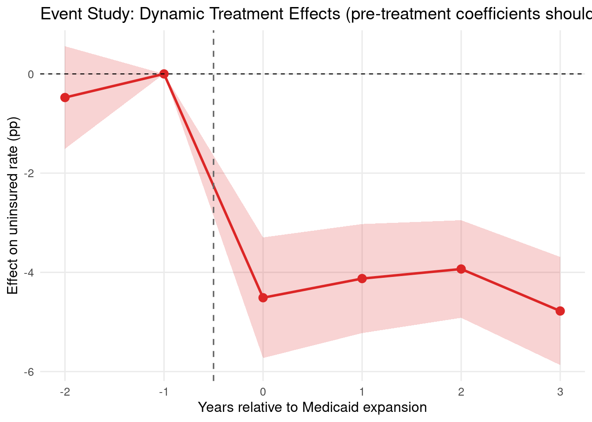

Health Analytics with R · Module 06: Causal Inference in Health Research
Learning objectives - Understand the parallel trends assumption and when DiD is valid - Implement classic 2×2 DiD and extend to panel data - Test pre-treatment parallel trends with event study plots - Apply Callaway-Sant’Anna staggered adoption DiD - Handle heterogeneous treatment effects across cohorts - Test the parallel trends assumption with placebo regressions
# Event study: estimate treatment effect at each time relative to policy# Yi,t = alpha_i + lambda_t + sum_k(beta_k * D_i * 1[t=k]) + e# k = time relative to treatment (k=-1 is reference period)df_did <- df_did |>mutate(rel_year = year - POLICY_YEAR,rel_cat =pmin(pmax(rel_year, -3), 3) )dk_name <-function(k) {if (k <0) paste0("d_km", abs(k)) elsepaste0("d_k", k)}for (k in-3:3) {if (k !=-1) { col <-dk_name(k) df_did[[col]] <-as.integer(df_did$expanded ==1& df_did$rel_cat == k) }}# TWFE event study with fixest (omit k = -1; k = -3 has no observations)model_es <-feols( uninsured_pct ~ d_km2 + d_k0 + d_k1 + d_k2 + d_k3 | state + year,data = df_did,cluster =~state)# Extract event study coefficientsevent_rows <-lapply(-3:3, function(k) {if (k ==-1) {tibble(k = k, coef =0, ci_lo =0, ci_hi =0) } else { param <-dk_name(k)if (param %in%names(coef(model_es))) { ci <-as.numeric(confint(model_es)[param, ])tibble(k = k, coef =as.numeric(coef(model_es)[[param]]),ci_lo = ci[1], ci_hi = ci[2]) } else {tibble(k = k, coef =NA_real_, ci_lo =NA_real_, ci_hi =NA_real_) } }})event_df <-bind_rows(event_rows) |>filter(!is.na(coef))p_es <-ggplot(event_df, aes(x = k, y = coef)) +geom_ribbon(aes(ymin = ci_lo, ymax = ci_hi), fill = col_red, alpha =0.2) +geom_line(colour = col_red, linewidth =1) +geom_point(colour = col_red, size =3) +geom_hline(yintercept =0, colour ="black", linetype ="dashed",linewidth =0.4) +geom_vline(xintercept =-0.5, colour ="grey40", linetype ="dashed",linewidth =0.6) +labs(x ="Years relative to Medicaid expansion",y ="Effect on uninsured rate (pp)",title ="Event Study: Dynamic Treatment Effects (pre-treatment coefficients should be ~0 if parallel trends hold)" )print(p_es)

ggsave(file.path(mod06_dir, "event_study.png"), p_es,width =10, height =5, dpi =120)pre_trend <- event_df |>filter(k <-1)cat("Pre-treatment event study coefficients (should be near 0):\n")
Pre-treatment event study coefficients (should be near 0):
for (i inseq_len(nrow(pre_trend))) { flag <-if (abs(pre_trend$coef[i]) <1) "OK"else"CONCERNING"cat(sprintf(" k=%d: %.3f %s\n", pre_trend$k[i], pre_trend$coef[i], flag))}
k=-2: -0.476 OK
5. Staggered Adoption — Callaway-Sant’Anna
# When treatment rolls out at different times, naive TWFE gives# a weighted average that can be negative even when all cohort ATTs are positive# Callaway-Sant'Anna (2021) estimates cohort-specific ATTsset.seed(42)N_states2 <-60cohorts <-c(2014, 2015, 2016, NA) # NA = never-treatedcohort_assign <-rep(cohorts, each =15)TRUE_COHORT_ATT <-c(`2014`=-5.0, `2015`=-4.0, `2016`=-3.0) # heterogeneous effectsstate_fe2 <-rnorm(N_states2, 0, 2)records2 <-vector("list", N_states2 *length(2012:2019))idx <-1for (s inseq_len(N_states2)) { cohort <- cohort_assign[s]for (yr in2012:2019) { post <-!is.na(cohort) && yr >= cohort effect <-if (post) unname(TRUE_COHORT_ATT[as.character(cohort)]) else0 unins <- (18+ state_fe2[s] -0.8* (yr -2012) + effect+rnorm(1, 0, 1.5)) records2[[idx]] <-tibble(state = s, year = yr,cohort =if (is.na(cohort)) "None"elseas.character(cohort),treated =as.integer(!is.na(cohort)),post =as.integer(post),uninsured_pct = unins ) idx <- idx +1 }}df_staggered <-bind_rows(records2)# Simple cohort-specific DiD (Callaway-Sant'Anna principle)# Compare each treated cohort to never-treated states in the relevant periodnever_treated <- df_staggered |>filter(cohort =="None")cs_results <-list()ri <-1for (g inc("2014", "2015", "2016")) { g_int <-as.integer(g) cohort_data <- df_staggered |>filter(cohort == g)for (t in g_int:2019) { mu_g_t <-mean(cohort_data$uninsured_pct[cohort_data$year == t]) mu_g_base <-mean(cohort_data$uninsured_pct[cohort_data$year == g_int -1]) mu_nt_t <-mean(never_treated$uninsured_pct[never_treated$year == t]) mu_nt_base <-mean(never_treated$uninsured_pct[never_treated$year == g_int -1]) att_gt <- (mu_g_t - mu_g_base) - (mu_nt_t - mu_nt_base) cs_results[[ri]] <-tibble(cohort = g, year = t, att = att_gt,true_att =unname(TRUE_COHORT_ATT[g]) ) ri <- ri +1 }}df_cs <-bind_rows(cs_results)true_lines <-tibble(cohort =names(TRUE_COHORT_ATT),true_att =unname(TRUE_COHORT_ATT))p_cs <-ggplot(df_cs, aes(x = year, y = att, colour = cohort)) +geom_hline(yintercept =0, colour ="black", linewidth =0.4) +geom_hline(data = true_lines, aes(yintercept = true_att, colour = cohort),linetype ="dotted", linewidth =0.8, alpha =0.7 ) +geom_line(linewidth =1) +geom_point(size =2.5) +scale_colour_manual(values =c("2014"= col_red, "2015"= col_blue,"2016"= col_green)) +labs(x ="Calendar year",y ="ATT(g,t) — pp reduction in uninsured rate",colour ="Cohort",title ="Callaway-Sant'Anna: Cohort-specific ATTs (dotted = true effect for each cohort)" )print(p_cs)